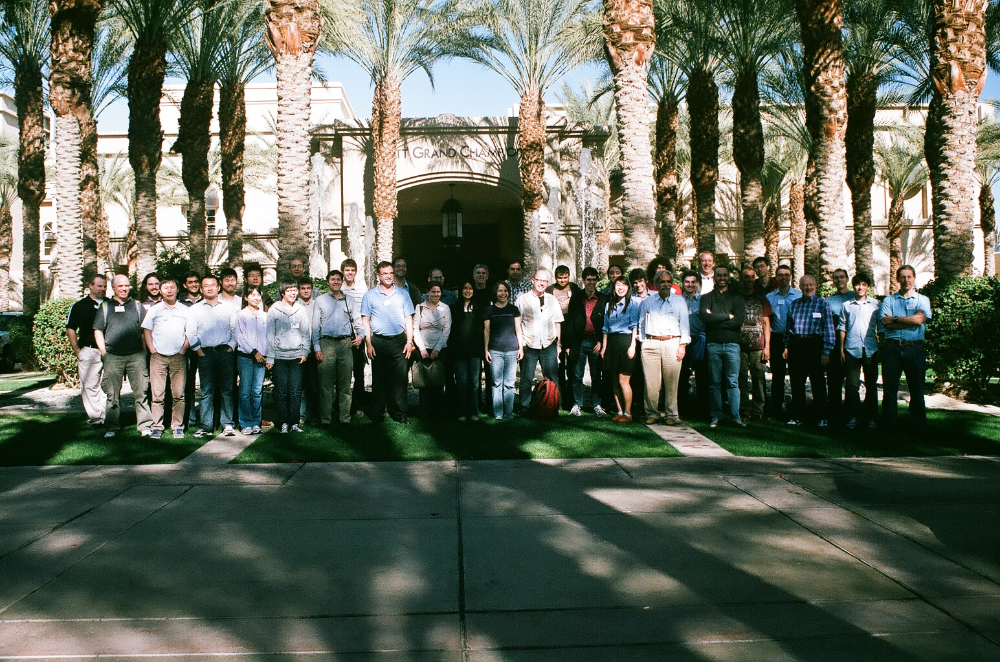

My Research Interests
Currenty, I am working in the Quantum Information and Quantum Computing group under the direction of Dr. Sabre Kais and Dr. Yuli Lyanda-Geller. My recent focus has been on quantum entanglement in quantum computing systems. Specifically, how can one control the interactions between qubits in quantum computers.
Conferences
5th Annual CSESC
West Lafayette, IN, USA; April 2013
Organized and attended the fifth annual Computational Science and Engineering Student Conference (CSESC) at Purdue University. Presented a talk titled Quantum Computing 101.
APS March Meeting
Baltimore, MD, USA; March 2013
Attended a series of seminars to learn about quantum computing and metamaterials
Winter School 2012 - Quantum Information and Computation for Quantum Chemistry
Indian Wells, CA, USA; January 2012
Attended a workshop to learn about quantum simulation, coherence, entanglement, and methods for overcoming decoherence

215th American Astronomical Society Meeting
Washington D.C., USA; January 2010
Attended the meeting as a student and presented a poster on radio and X-ray research
19th Annual WSGC Conference
Milwaukee, WI, USA; August 2009
Presented my undergraduate work in radio and X-ray astronomy
The Physics of Many Positrons
Varenna, Italy; July 2009
Attended a two-week long conference at the Enrico Fermi School of Physics that covered the production and uses of concentrated beams of positrons
Undergraduate Research Experience
Positron Beam
Marquette University; August 2009 – August 2010
Helped design, build, and test the first positron beam at Marquette University
Radio and X-Ray Astronomy
Marquette University; May 2008 – August 2009
Our major goal was to explore the possible evolutionary link between Type Ib/c and Type II supernovae (SNe). Our group analyzed radio data from the Very Large Array and X-ray data from the Chandra, Swift, and Newton-XMM satellites under the guidance of Dr. Christopher Stockdale and Dr. Stefan Immler.
Validation at Boston Scientific Corporation
Spring and Fall 2007
I worked for two semesters as a co-op validation engineer Our team performed tests on extruded plastics to see which industrial parameters would produce the strongest and safest tubes for medical devices